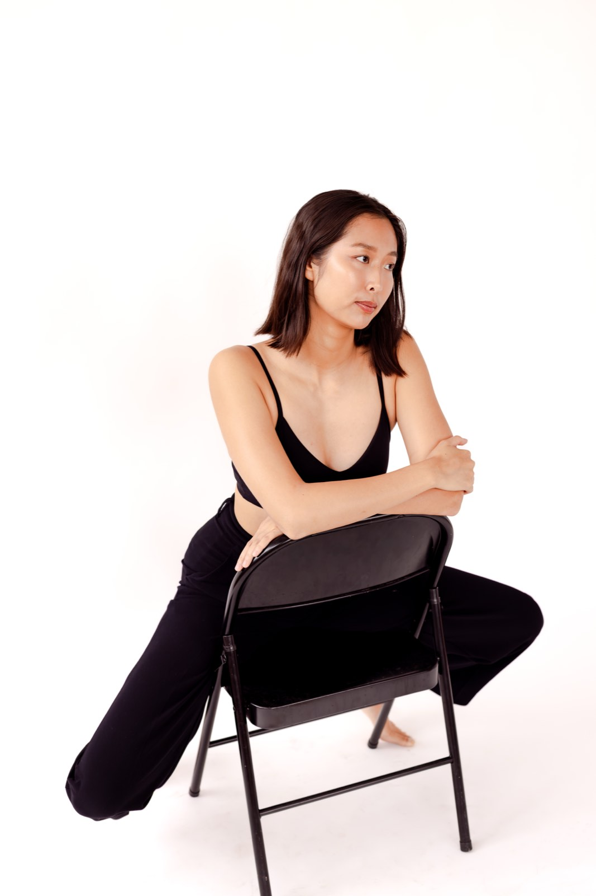
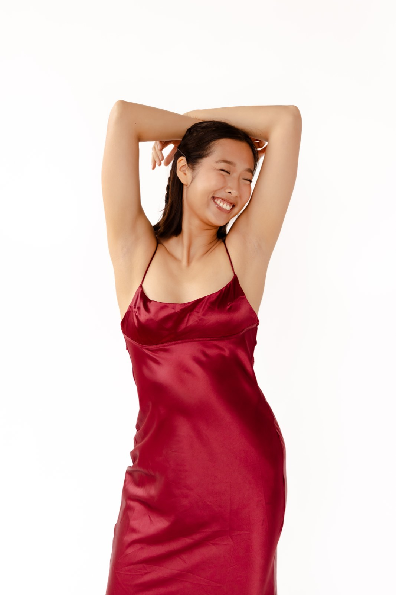
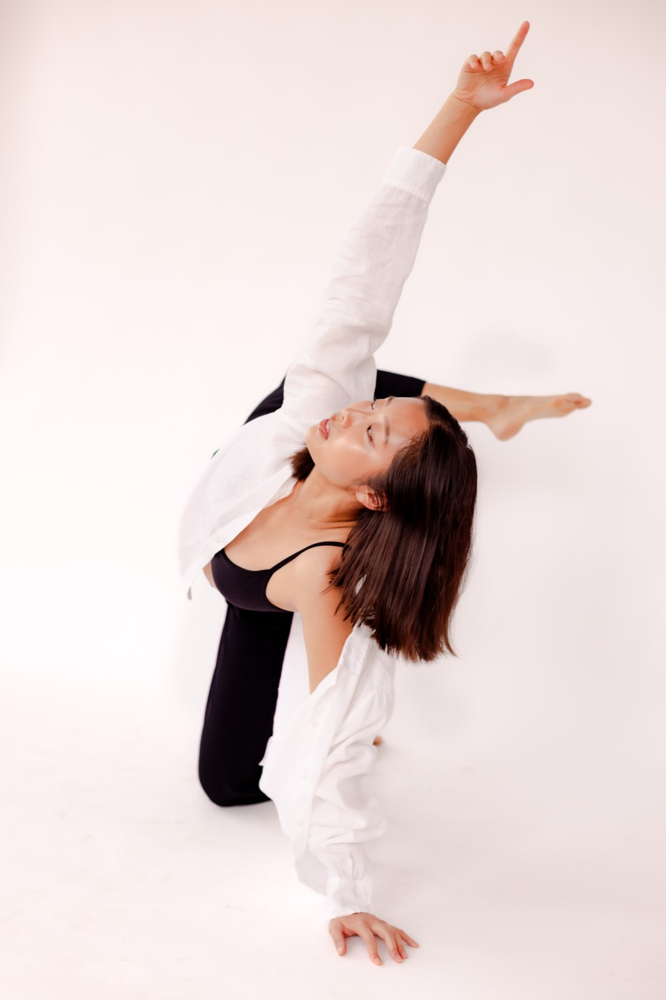
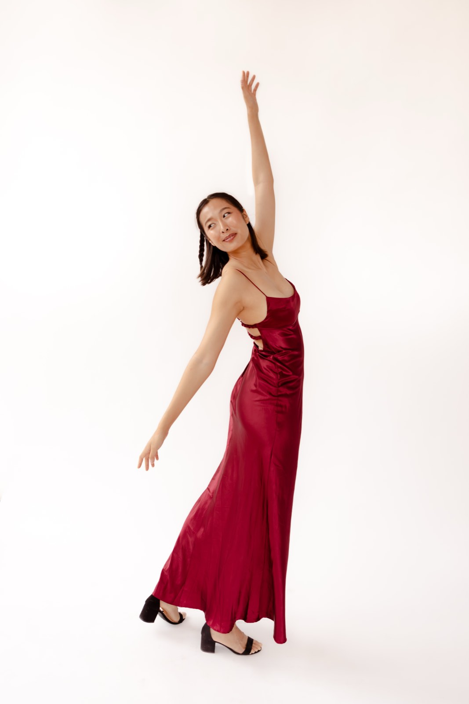
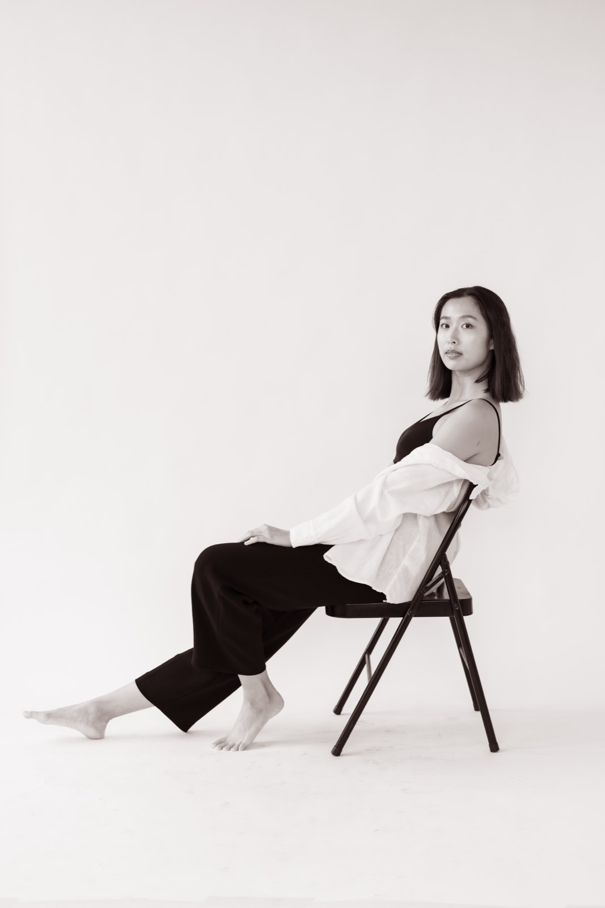
photographer: @katiekellyphotography_ | MUA: @laurensimpsonmakeup





photographer: @katiekellyphotography_ | MUA: @laurensimpsonmakeup
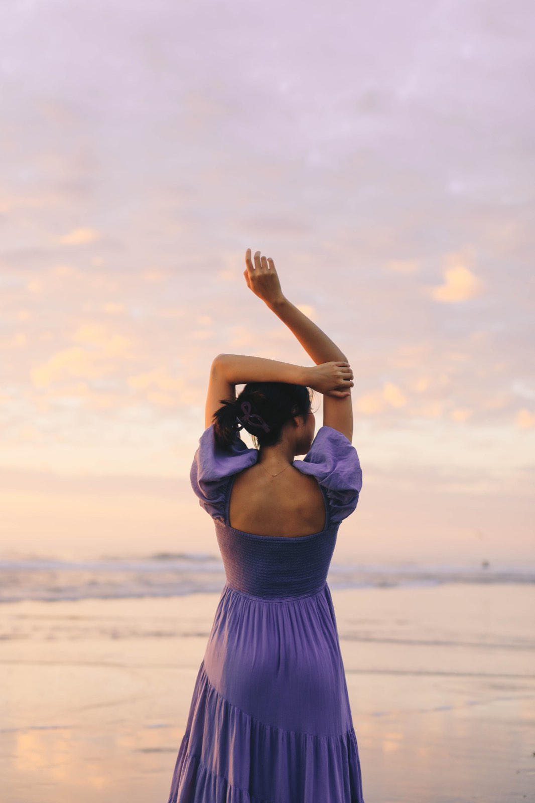
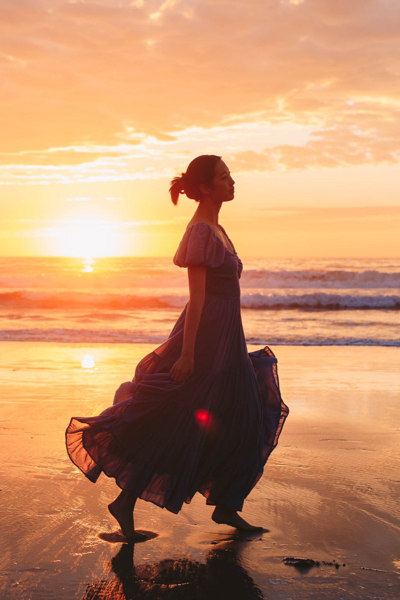
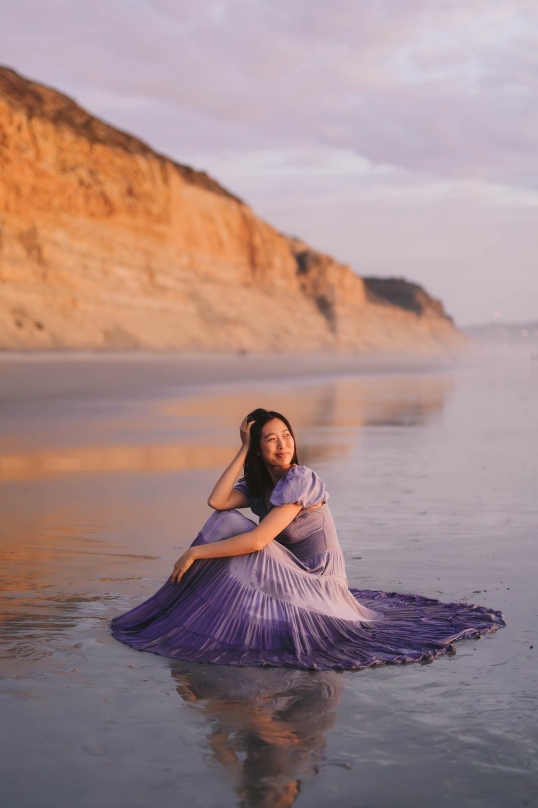
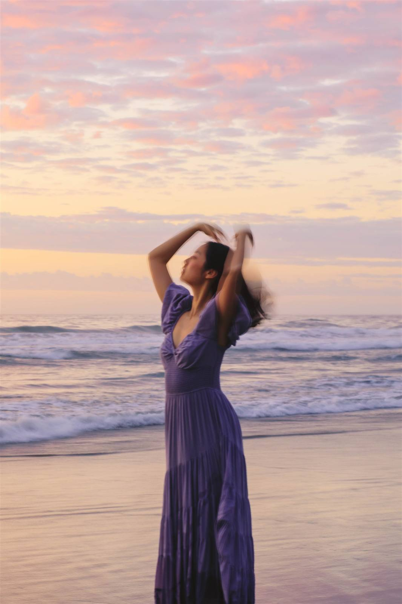
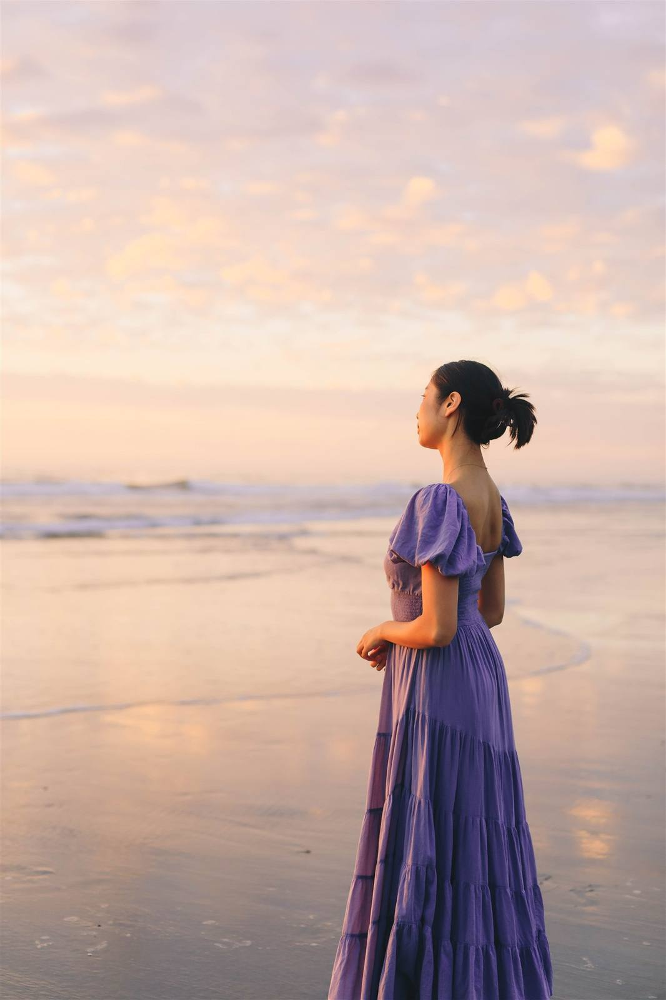
photographer: @deertrailphoto
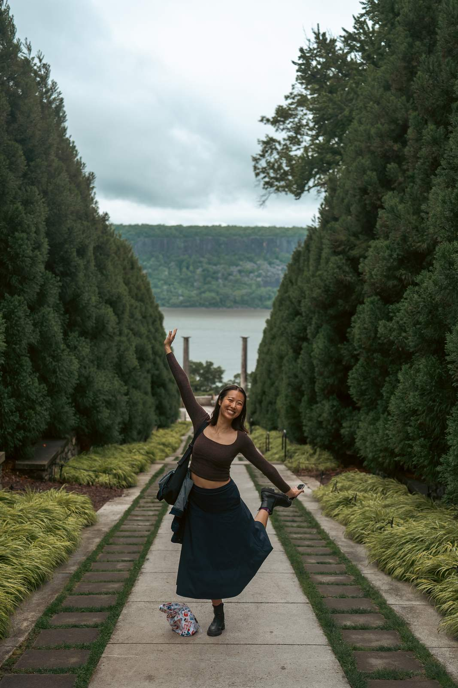
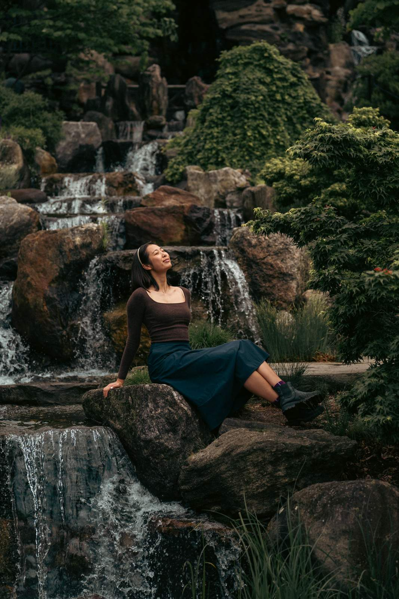
photographer: @lucaophotography